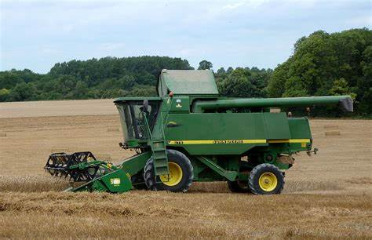
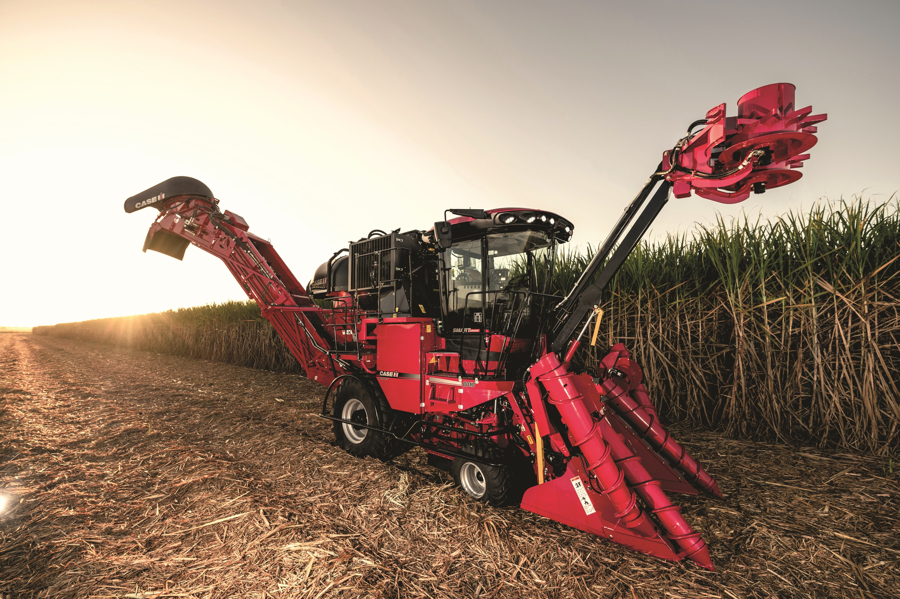

Harvester
A Harvester is an engineering vehicle specifically designed to deliver a high tractive effort (or torque) at slow speeds, for the purposes of hauling a trailer or machinery such as that used in agriculture, mining or construction. Most commonly, the term is used to describe a farm vehicle that provides the power and traction to mechanize agricultural tasks, especially (and originally) tillage, and now many more. Agricultural implements may be towed behind or mounted on the tractor, and the tractor may also provide a source of power if the implement is mechanised.
The first powered farm implements in the early 19th century were portable engines – steam engines on wheels that could be used to drive mechanical farm machinery by way of a flexible belt. Richard Trevithick designed the first 'semi-portable' stationary steam engine for agricultural use, known as a "barn engine" in 1812, and it was used to drive a corn threshing machine.The truly portable engine was invented in 1893 by William Tuxford of Boston, Lincolnshire who started manufacture of an engine built around a locomotive-style boiler with horizontal smoke tubes. A large flywheel was mounted on the crankshaft, and a stout leather belt was used to transfer the drive to the equipment being driven. In the 1850s, John Fowler used a Clayton & Shuttleworth portable engine to drive apparatus in the first public demonstrations of the application of cable haulage to cultivation.
In parallel with the early portable engine development, many engineers attempted to make them self-propelled – the fore-runners of the traction engine. In most cases this was achieved by fitting a sprocket on the end of the crankshaft, and running a chain from this to a larger sprocket on the rear axle. These experiments met with mixed success. The first proper traction engine, in the form recognisable today, was developed in 1859 when British engineer Thomas Aveling modified a Clayton & Shuttleworth portable engine, which had to be hauled from job to job by horses, into a self-propelled one. The alteration was made by fitting a long driving chain between the crankshaft and the rear axle.
The first half of the 1860s was a period of great experimentation but by the end of the decade the standard form of the traction engine had evolved and changed little over the next sixty years. It was widely adopted for agricultural use. The first tractors were steam-powered plowing engines. They were used in pairs, placed on either side of a field to haul a plow back and forth between them using a wire cable. In Britain Mann's and Garrett developed steam tractors for direct ploughing, but the heavy, wet soil of England meant that these designs were less economical than a team of horses. In the United States, where soil conditions permitted, steam tractors were used to direct-haul plows. Steam-powered agricultural engines remained in use well into the 20th century until reliable internal combustion engines had been developed.